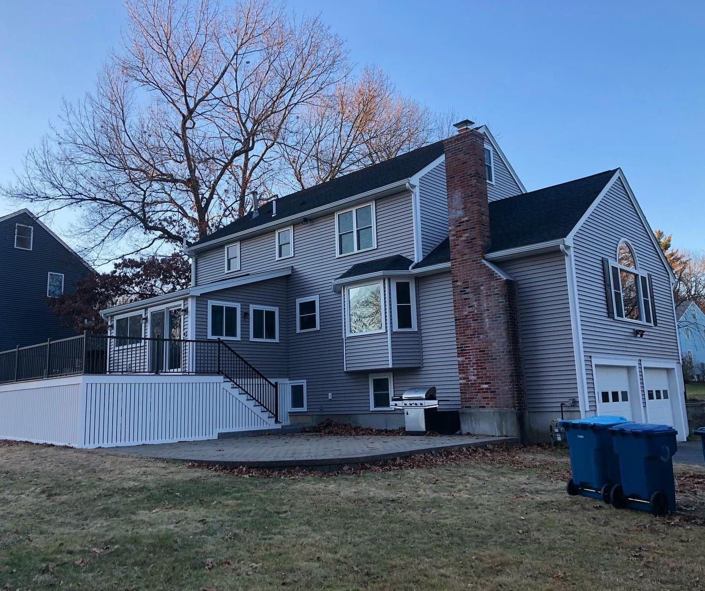

Remodeling in Tyngsborough, MA
Riverfront and wooded lots across Tyngsborough — Murray builds decks, additions, and remodels that suit the setting.
Trusted remodeling in Tyngsborough
Murray Home Improvement is an owner-operated remodeling and building contractor based in neighboring Chelmsford, proudly serving homeowners throughout Tyngsborough. Riverfront and wooded lots across Tyngsborough — Murray builds decks, additions, and remodels that suit the setting.
Whether you are dreaming of a new kitchen, a bathroom refresh, more living space, or a full exterior transformation, you will work directly with Eric Murray from the first estimate to the final walk-through. If you can think it, we will build it.
Services we offer in Tyngsborough
See the transformation
Drag the slider — a recent exterior remodel near Tyngsborough.
Why Tyngsborough homeowners choose us
Owner-operated
Work directly with Eric Murray from first estimate to final walk-through.
Licensed & insured
A fully licensed and insured Massachusetts general contractor.
30+ years
Three decades of residential remodeling across the Merrimack Valley.
Local to you
Based in neighboring Chelmsford — we know these homes and this climate.
Quality materials
Only the finest materials and brands, for results that last.
Free estimates
A fair, itemized estimate with a clear breakdown of costs.
From idea to handover
Consult
We visit your home, listen to your goals, and provide a free estimate.
Design
We plan every detail with experienced kitchen and home designers.
Build
Craftsmanship on-site and on schedule, with the owner involved throughout.
Reveal
We hand back a home that fits your life — and is built to last.
Frequently asked
Do you serve Tyngsborough, MA?+
Yes — Tyngsborough is right in our service area, a short drive from our Chelmsford home base. We work throughout the town and the surrounding Merrimack Valley.
Are you licensed to work in Tyngsborough?+
We are a fully licensed and insured Massachusetts general contractor (MA CSL #077319, HIC #174394) and pull all required local permits and inspections.
What kinds of projects do you take on in Tyngsborough?+
Everything from kitchens and bathrooms to additions, second levels, finished basements, decks, siding, windows, and roofing — frame to finish.
Remodeling in Tyngsborough? Let’s talk.
Tell us about your project and we’ll get back to you with a no-obligation estimate.